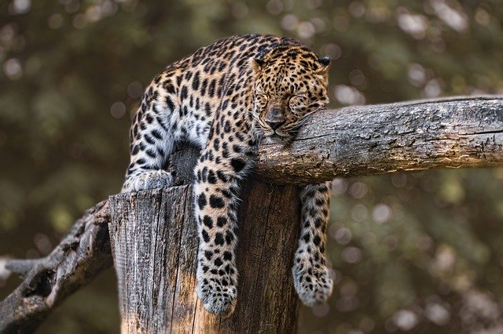

símbolo brasileiro de conservação
A onça-pintada é o maior felino das Américas e, como predador de topo de cadeia em um mundo cada vez mais desmatado, está ameaçada. Esse gatão consta nas listas de espécies ameaçadas de extinção do ICMBio como Vulnerável, mas seu status de conservação varia em diferentes biomas. Na Caatinga e Mata Atlântica, por exemplo. a espécie se encontra Criticamente Ameaçada de extinção.
Considerando que trabalhar a coexistência entre gente e onças é crucial para a sobrevivência da espécie (aliás, isso vale para todos os grandes gatos), umas das estratégias de quem trabalha com a conservação da espécie é tentar mudar a percepção que as pessoas têm das onças.
Ao invés de um animal “nocivo” e necessariamente perigoso, buscar fazer as pessoas enxergarem este gato magnífico com outros olhos, de admiração, de amor e cuidado. Mas para isso é preciso falar sobre onças. E falar muito. Envolver, informar, conectar.
Muito do medo que as pessoas têm da onça-pintada vem da falta de informação. A informação “mata” o medo, e abre espaço para que o encantamento possa entrar. Parece piegas, né? Mas é verdadeiro.
Proteção
Em uma das atividades do Projeto Onças do Iguaçu, chamada “Papo de Onça”
que são conversas com comunidades lindeiras ao Parque Nacional do Iguaçu (geralmente adultos) sobre onças-pintadas, prevenção e boas práticas no manejo de gado para evitar a predação –, temos percebido que há uma mudança na percepção que os moradores têm das onças antes e depois da atividade. Os Papos de Onça são feitos à noite, geralmente com a comunidade rural, e associam informação e integração (sempre tem cachorro quente depois, assim criamos um ambiente informal de troca de saberes).
Laurie Bennet, da Comissão de Comunicação e Educação da IUCN, reconhece que a forma como nos comunicamos é essencial para a conservação da biodiversidade e há alguns anos a IUCN lançou a campanha “Love, not Loss” (Amor, não perca em tradução livre). A base da campanha é que a melhor maneira de reacender um amor perdido é não falar apenas sobre o que deu errado, como extinção, perda de habitat ou escassez de recursos. Mas também lembrar o que amamos em primeiro lugar. Contar histórias de amor pela natureza.
Falar de amor é necessário para salvar espécies, para salvar o que resta de biodiversidade.
Com isso em mente, o Centro Nacional de Pesquisa e Conservação de Mamíferos Carnívoros (CENAP/ICMBio) e o Projeto Onças do Iguaçu se uniram ao Ministério do Meio Ambiente para criar o Dia Nacional da Onça-Pintada.